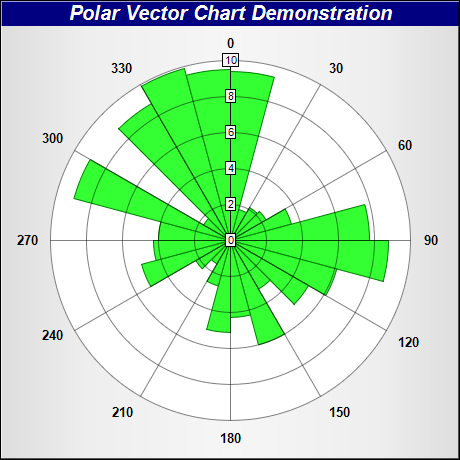

This example demonstrates how to create a rose chart.
A rose chart is basically a polar chart with sectors of variable radius. This can be achieved by creating a
PolarChart object as the graph paper, and adding sector zones on it using
AngularAxis.addZone.
To enable auto-scale of the axis, in this example, we also add the radius data to a transparent line layer using
PolarChart.addLineLayer. The line layer has no visible effect, but it causes the radial axis to auto-scale so that it covers the radius data.
The following is the command line version of the code in "cppdemo/rose". The MFC version of the code is in "mfcdemo/mfcdemo". The Qt Widgets version of the code is in "qtdemo/qtdemo". The QML/Qt Quick version of the code is in "qmldemo/qmldemo".
#include "chartdir.h"
int main(int argc, char *argv[])
{
// Data for the chart
double data[] = {9.4, 1.8, 2.1, 2.3, 3.5, 7.7, 8.8, 6.1, 5.0, 3.1, 6.0, 4.3, 5.1, 2.6, 1.5, 2.2,
5.1, 4.3, 4.0, 9.0, 1.7, 8.8, 9.9, 9.5};
const int data_size = (int)(sizeof(data)/sizeof(*data));
double angles[] = {0, 15, 30, 45, 60, 75, 90, 105, 120, 135, 150, 165, 180, 195, 210, 225, 240,
255, 270, 285, 300, 315, 330, 345};
const int angles_size = (int)(sizeof(angles)/sizeof(*angles));
// Create a PolarChart object of size 460 x 460 pixels, with a silver background and a 1 pixel
// 3D border
PolarChart* c = new PolarChart(460, 460, Chart::silverColor(), 0x000000, 1);
// Add a title to the chart at the top left corner using 15pt Arial Bold Italic font. Use white
// text on deep blue background.
c->addTitle("Polar Vector Chart Demonstration", "Arial Bold Italic", 15, 0xffffff
)->setBackground(0x000080);
// Set plot area center at (230, 240) with radius 180 pixels and white background
c->setPlotArea(230, 240, 180, 0xffffff);
// Set the grid style to circular grid
c->setGridStyle(false);
// Set angular axis as 0 - 360, with a spoke every 30 units
c->angularAxis()->setLinearScale(0, 360, 30);
// Add sectors to the chart as sector zones
for(int i = 0; i < data_size; ++i) {
c->angularAxis()->addZone(angles[i], angles[i] + 15, 0, data[i], 0x33ff33, 0x008000);
}
// Add an Transparent invisible layer to ensure the axis is auto-scaled using the data
c->addLineLayer(DoubleArray(data, data_size), Chart::Transparent);
// Output the chart
c->makeChart("rose.png");
//free up resources
delete c;
return 0;
}
© 2023 Advanced Software Engineering Limited. All rights reserved.